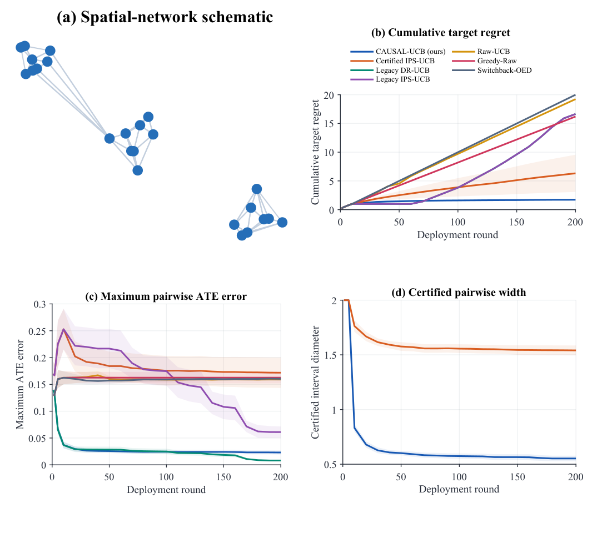
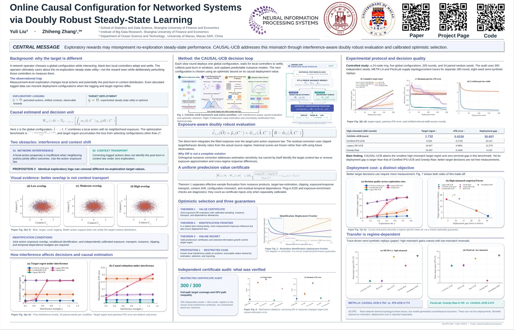

Same logs, different target values
Even identical exploratory logs can conceal different no-exploration steady-state values. Exposure overlap is not a guarantee of context transport.
Online Causal Configuration for Networked Systems
via Doubly Robust Steady-State Learning
Think of a network as a community of interacting units: the nodes and connections stay in place, but signals and local states change whenever a configuration is applied.
Adjust the conceptual interference strength to see how strongly a change in one cluster can echo through its neighbors.
This is an interactive visual analogy, not the paper’s simulator, an estimator output, or measured performance data.
Drag the slider to change visualization intensity. It does not run CAUSAL-UCB or predict regret.
Exploratory telemetry can misrank configurations when measurement perturbs local actions and shifts the post-burn-in context law. CAUSAL-UCB evaluates no-exploration causal value using joint-exposure doubly robust scores and calibrated predecision certificates.
Latest supplied manuscript: 66 pages · public arXiv v1: 64 pages. Figures and page references below follow the supplied manuscript; links lead to both versions.
Global decisions change the actions of many interdependent units. Exploratory measurements can improve the identification of a counterfactual value, yet also alter the operating conditions that the final system should optimize.
The target is no-exploration steady-state utility. Action–exposure overlap alone cannot transport post-burn-in contexts; CAUSAL-UCB separates these sources of error and selects configurations using predecision certified upper values.
Represent how a unit's neighborhood influences its observed outcome.
Estimate deployment values from exploratory observations with overlap-aware correction.
Select future configurations using estimates and uncertainty, not raw telemetry alone.
Exploration changes what is observed—and potentially the operating regime whose utility we seek. The paper isolates interference-aware action correction from steady-state context transport, then certifies their remaining uncertainty before selection.
Even identical exploratory logs can conceal different no-exploration steady-state values. Exposure overlap is not a guarantee of context transport.
A predecision value radius separates network-window fluctuation, nuisance products, target-law error, clipping, exposure/response transport, context shifts, configuration mismatch and residual temporal dependence.
Measurement improves identification yet perturbs utility; regret guarantees require valid certificates and selected-information growth.
Under known local interference, the same anytime calibrated radius supports estimation, optimistic selection and reported uncertainty.
A four-stage causal-optimistic loop.
Map local actions and neighbors into a context suitable for auditing interference.
Explore theory & evidence ↗Create support for evaluating alternatives while tracking the deployment perturbation.
Explore theory & evidence ↗Combine outcome regression, logging correction, clipping, and uncertainty assessment.
Explore theory & evidence ↗Use the evaluated values and bounds to choose the next global configuration.
Explore theory & evidence ↗Archived per-round controls, exact manuscript figure plates and independent certificate audits. These are distinct protocols; the live browser experiment does not reproduce the full paper benchmark.
Explore recorded decisions, compare outcomes, or run a new experiment with your own settings.
| Method | Target regret ↓ | Deploy. gap ↓ | Final ATE ↓ | Certified width ↓ | Selected configuration | Available record |
|---|---|---|---|---|---|---|
| Loading original records… | ||||||
At an intermediate round, non-certified Low Mismatch trajectories are unavailable: “—” means not logged, never zero. Final ATE and valid certified width appear only at the terminal summary. A width for non-certified methods must not be interpreted as a valid decision-active certificate.
Loading paired seed results…
Loading reference-policy comparison…
Loading deployment trade-offs…
High mismatch has saved 200-round trajectories for all seven methods. Low mismatch has trajectories for the two certified methods and final results for the other five. Values without saved traces are never interpolated. The live browser experiment below uses a smaller conditional implementation, while this chart replays archived paper results.
Original frozen SYN 2026-10-20 · known sparse ring and matched-noise assumptions · fixed exploration · 24 paired seeds × 200 rounds. Certified curves come from cert_dr_all_rounds.csv. High-mismatch curves for the other five methods come from the exact archived reference/main_per_round.csv.gz and were cross-checked against per_seed.csv. Low-mismatch reference results are terminal-only. All terminal values come from per_seed.csv and summary.csv; paired intervals come from paired_regret_95CI.csv. No browser-side retraining in this panel.
Each tab opens a direct high-resolution crop of the 66-page supplied PDF. Figure numbers and page locations are checked against this version. Click anywhere on a tab, or use ← / → to switch.

Exact source: latest supplied manuscript, page 8.
Read manuscript source page ↗The old webpage mislabeled the full-path audit as Fig. 27. In the 66-page revision, that result is Fig. 28, p. 61; Fig. 27 is a separate 18-cell paired-regret diagnostic. All four tabs below now match the paper.
Both full-path target coverage and the OFU path inequality hold in all 300/300 independently seeded audit runs; intervals are 95% Wilson intervals.
These empirical audit results hold for the specified finite-state calibrated protocol. They do not certify arbitrary unmodeled networks.
Source: supplied 66-page manuscript · Figure 28 · page 61
Open exact figure ↗Read original PDF page ↗A companion visual overview of the causal identification problem, doubly robust certificates, theoretical guarantees, and experiment boundaries. The poster is an interpretive summary; paper plots above remain the primary scientific record.

OPEN POSTER ↗Adjust the parameters, select the methods, and run a fresh simulation in your browser.
New runs use the conditional model; paper results above remain available for direct comparison. Details ↓
This browser-run simulation uses the earlier conditional / local-exposure Python implementation. It is a different experimental setup from the recorded certified benchmark above; outcomes are not directly interchangeable.
Ready. First run downloads the Python runtime (~10–25 MB). Internet required for the runtime.
| Policy | Configuration | Target regret | DR audit width | Matched nodes |
|---|---|---|---|---|
| No measurements yet | ||||
causal_ucb_conditional.py algorithm without changing its policy logic, under an explicitly declared 24-node, known-ring, randomized local-exposure synthetic model. Oracle values are used for post-choice evaluation only. The common DR width is a diagnostic on each policy's own logs, not a universal theorem certificate. Regret curves can coincide when two policies choose identical configurations; this does not imply their DR and IPS estimators are identical. The final native pairwise ATE error compares estimators against the synthetic oracle only after the decisions are made. This run is not the 24-seed × 200-round main benchmark, the 300×160 certificate audit, or the general black-box theorem. Results depend on the chosen seed and may differ from the paper's aggregate plots. No experiment data leaves your browser.Browser limitations: WebAssembly, modern browser and Pyodide CDN access required; computing happens in the visitor's device. Full independent-seed experiments remain available in the original research code archive.
This repository contains the executable core comparison, archived benchmark data and figure assets. The supplied paper includes additional certificate audits and trace-driven semi-synthetic studies, which are not rerun by this website.
# From repository root
python -m pip install -r requirements.txt
python -m unittest discover -s src/tests -v
python src/fast_compare.py --out results_reproduced --seeds 24 --T 200 --scenarios high_mismatch,low_mismatchChoose the format that fits what you want to do: understand the paper, reproduce a claim, or exchange ideas with the community.
The local Paper link opens the supplied 66-page manuscript. arXiv opens the public 64-page v1; figure citations on this website use the supplied revision.
The homepage montage uses illustrative real-world transport and infrastructure stock media plus a procedural, fixed-topology network visual. Neither is experimental data, METR-LA footage, or evidence of a live deployment. Media loaded from Pexels requires an internet connection. Pexels license ↗